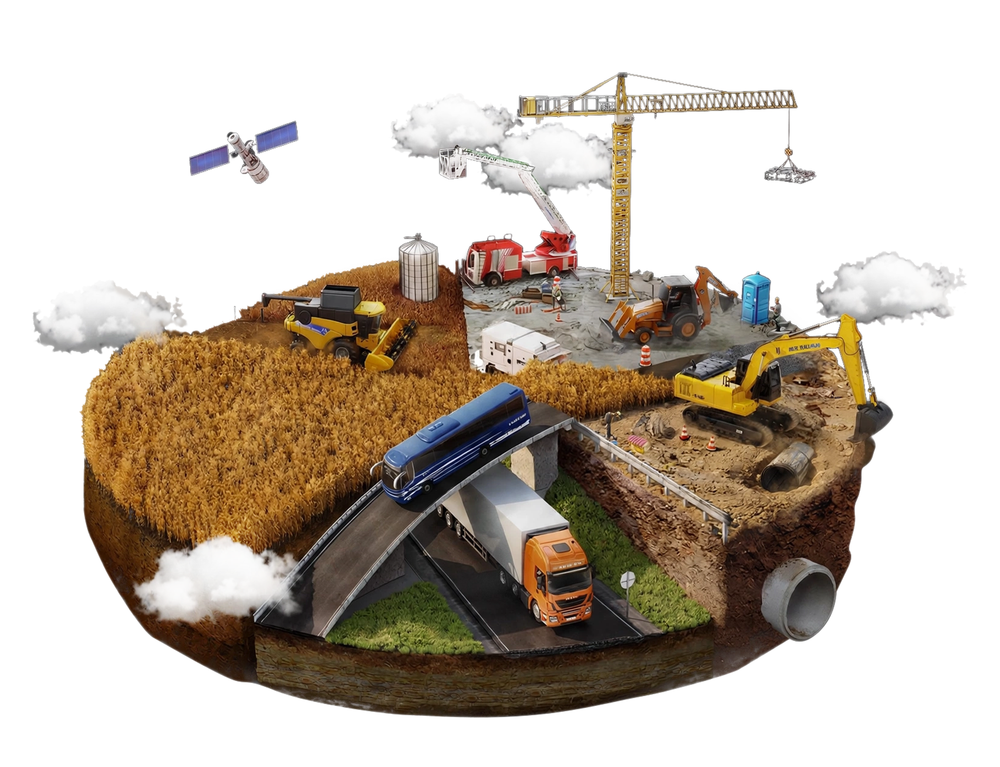

Fondations solides à Goma : les 7 points contrôlés avant le bétonnage
Du sol au ferraillage, découvrez notre méthode de contrôle avant chaque coulage.
B-MEC SARL · GOMA · RDC
Depuis 2015, B-MEC SARL étudie, planifie et réalise des infrastructures durables en République Démocratique du Congo.


Notre entreprise
Créée en 2015 à Goma, B-MEC SARL accompagne les entreprises, organismes publics et privés ainsi que les particuliers dans l’étude, la planification, l’évaluation, la construction et la réhabilitation d’infrastructures, grâce à des techniciens expérimentés et compétents.
Repères essentiels
Quelques jalons clés pour comprendre l’évolution de B-MEC SARL, de sa création à son activité actuelle en RDC.
ACTE NOTARIÉ 057/2015 · RCCM CD/GOM/RCCM/15-B-0299Création de l’entreprise à Goma pour intervenir dans les études, la construction et la réhabilitation d’infrastructures.
Développement des services techniques, de l’architecture, des fournitures et de l’expertise immobilière pour accompagner plus de besoins.
B-MEC SARL mobilise des équipes qualifiées pour étudier, planifier et réaliser des projets dans plusieurs secteurs et provinces.
Compétences intégrées
ÉTUDES & CONCEPTION
Des études techniques pour concevoir, dimensionner et planifier des infrastructures adaptées au terrain et aux besoins du maître d’ouvrage.
CONSTRUCTION D’OUVRAGES
Construction et réfection d’infrastructures publiques et privées.
CORPS TECHNIQUES
Des interventions techniques ciblées pour les réseaux, équipements et finitions indispensables au bon fonctionnement des ouvrages.
FOURNITURES & LIVRAISON
Un service d’approvisionnement et de livraison pour fournir les articles, matériaux et équipements utiles aux projets et aux activités courantes.
ÉVALUATION DES BIENS
Des évaluations immobilières fiables pour mieux apprécier la valeur des constructions, terrains et autres biens.
Processus maîtrisé
Une progression claire, du cadrage initial à la validation finale, pour piloter chaque projet avec méthode.
Compréhension des objectifs, du budget, du calendrier et des contraintes du client.
Inspection du site, analyse du terrain, des accès et des conditions d’exécution.
Préparation d’une solution technique, d’une estimation financière et d’un planning.
Organisation des équipes, des matériaux, de la logistique et des différentes phases.
Réalisation des travaux avec supervision technique et contrôle qualité régulier.
Inspection finale, validation avec le client et remise de l’ouvrage.
Capital humain
Le personnel de B-MEC SARL constitue l’un des principaux piliers de l’entreprise. Nos équipes techniques, administratives et opérationnelles interviennent de manière coordonnée pour garantir la qualité, la sécurité et le respect des engagements.
 COORDINATION · TECHNIQUE · TERRAIN
COORDINATION · TECHNIQUE · TERRAIN
“Une organisation claire. Des responsabilités précises. Un objectif commun : la réussite du projet.
Portfolio
Découvrez une sélection de projets réalisés ou suivis par B-MEC SARL dans les domaines de la construction, de la rénovation, du génie civil et des travaux publics.

Immeuble résidentiel R+2 de 1 240 m² : fondations, gros œuvre et finitions.

Réhabilitation complète de 680 m² réalisée en huit semaines.

Aménagement de 14 espaces de travail, accueil, salle de réunion et réseau technique.

Mur sécurisé de 186 mètres linéaires avec portail métallique et éclairage extérieur.

Semelles isolées et longrines en béton armé sur une emprise de 420 m².

Construction de 310 mètres de drainage maçonné et six ouvrages de franchissement.

Carrelage, faux plafonds, peinture intérieure et menuiseries sur 540 m².

Charpente métallique et couverture de six salles de classe, surface totale 760 m².
Année de création
Secteurs principaux
Profils de clients
Principal pays d’activité : RDC
Publics accompagnés
B-MEC SARL intervient auprès de structures et de particuliers ayant besoin d’études, de travaux, de fournitures ou d’une expertise immobilière.
Mettre à la disposition de chaque client des techniciens expérimentés et compétents, capables d’étudier, planifier et évaluer les besoins liés à la construction des infrastructures.
Notre différence
Une entreprise enregistrée disposant de références RCCM, ID. NAT., fiscales, notariales et sociales.
Des techniciens compétents mobilisés selon les besoins de chaque mission.
Calcul, conception, cartographie, planification et évaluation avant l’exécution.
Ingénierie, technique, architecture, commerce général et expertise immobilière.
Une direction générale à Goma et un principal lieu d’activité en République Démocratique du Congo.
Une intervention sur les bâtiments, routes, ponts, ouvrages hydrauliques et autres infrastructures.
Conseils & expertise
Suivez l’actualité de nos chantiers et découvrez les pratiques qui guident nos équipes sur le terrain.
Voir tous les articles
Du sol au ferraillage, découvrez notre méthode de contrôle avant chaque coulage.

Étudions votre besoin